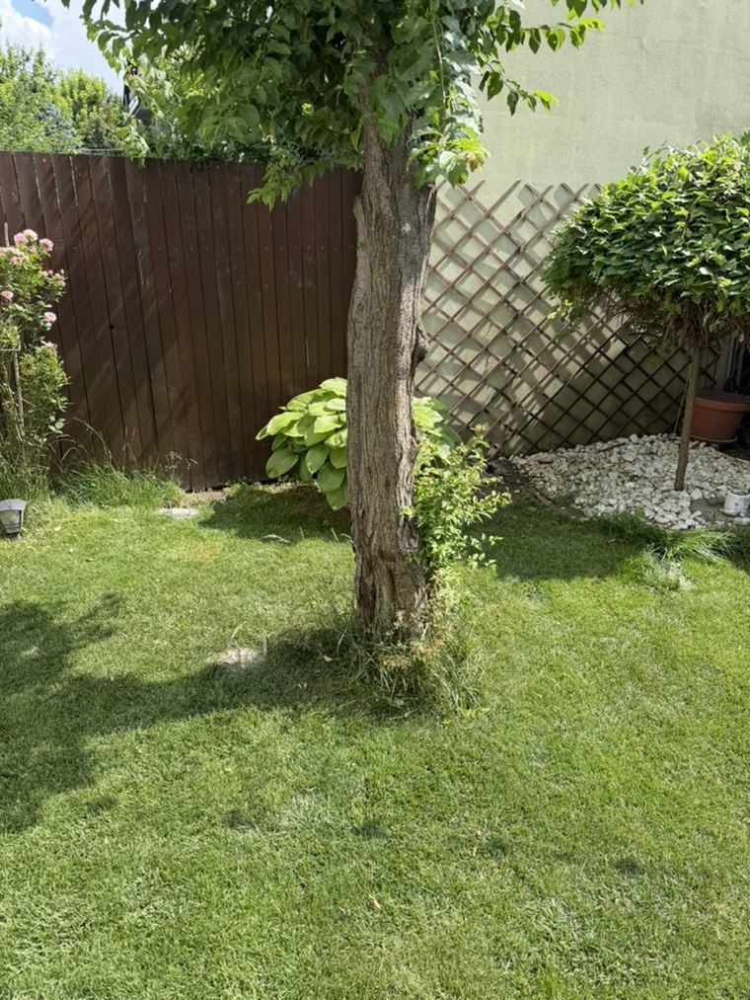
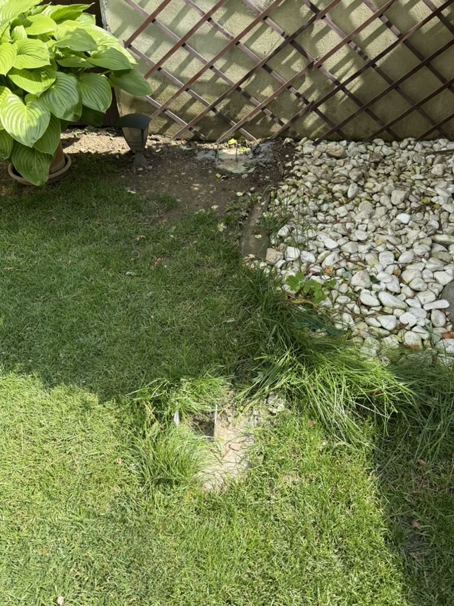
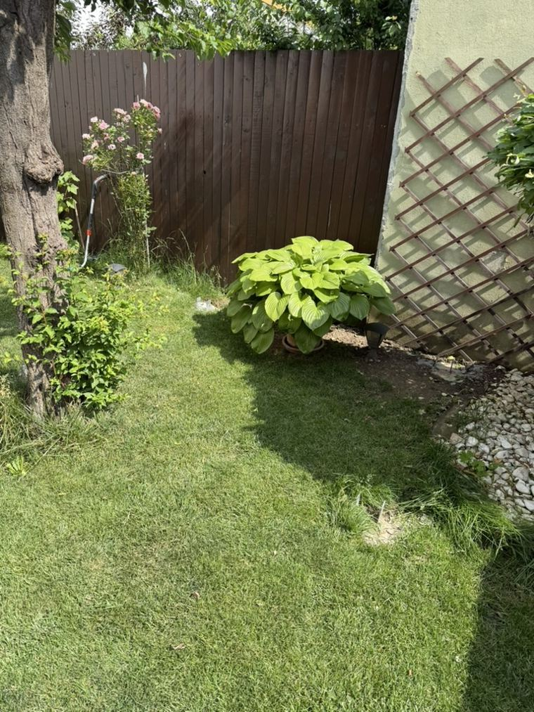
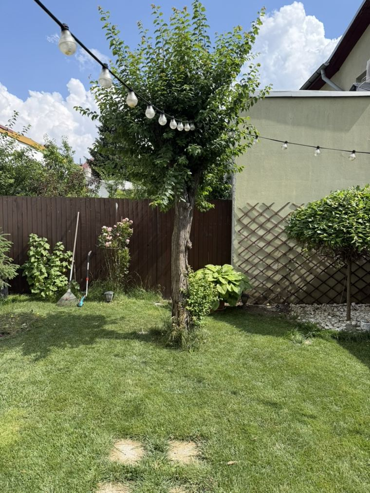

Tot ce tine de proiect intr-un loc: unde suntem, cum se construieste, ce cumperi, cum se imbina si modelele 3D.
Stadiu proiectvezi →
Sase locuri, fiecare cu un singur rost. Bara de sus te duce oriunde, din orice pagina.
Fazele proiectului si un checklist bifabil. Progresul se salveaza in browser.
deschide →Pas cu pas, ca la mobila, cu schema 2D si model 3D la fiecare etapa. Plus 11 fise stil IKEA, una pe etapa. Pasii critici marcati.
deschide →Toate piesele cu poza, cod si status, tabelul de paritate si sculele. Ce ai, ce-ai comandat, ce mai trebuie.
deschide →Nodul din fata in 3D si cele cinci imbinari desenate: coltare, suruburi, polita, contravantuiri.
deschide →Patru modele de rotit: montajul pe etape, platforma intreaga, nodul si scara.
deschide →Prezentarea vizuala, cotele blocate, regulile de siguranta si auditul tehnic al proiectului.
deschide →Locul real: gradina din spate, gardul de lemn si corcodusul prin care va trece balconul.



Documentele printabile. Modelele 3D raman online (interactive).